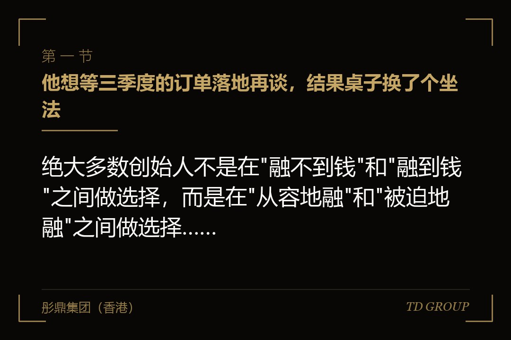
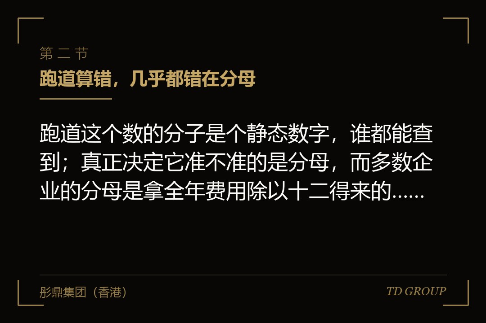
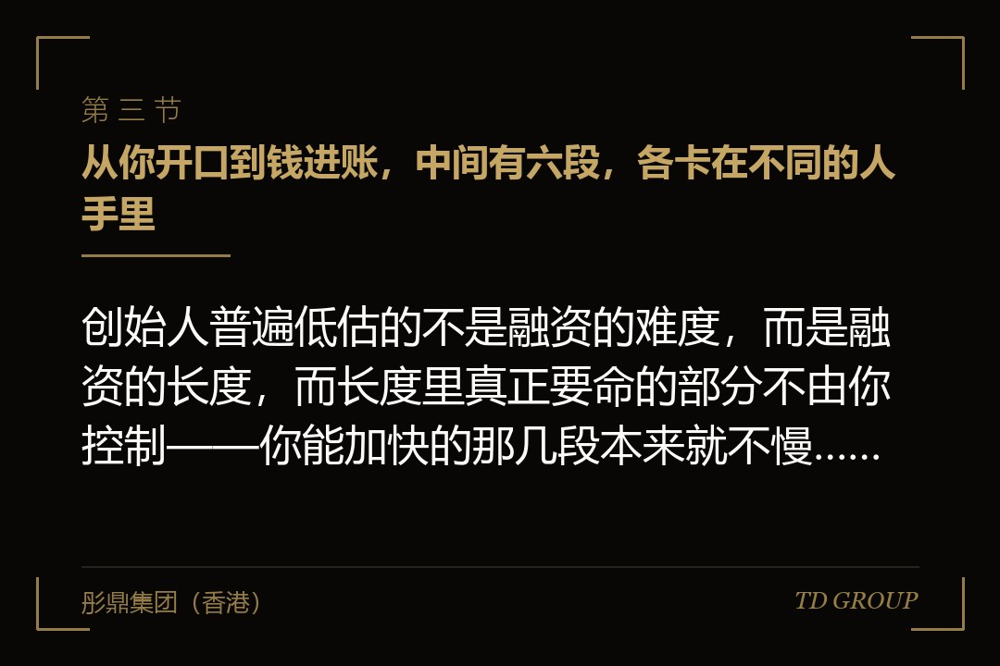

一、他想等三季度的订单落地再谈，结果桌子换了个坐法

结论先行：绝大多数创始人不是在"融不到钱"和"融到钱"之间做选择，而是在"从容地融"和"被迫地融"之间做选择，而这个选择在开口之前就已经做完了。一家做工业传感器的企业，年初账上可动用资金两千六百万，那几个月的月度净流出大约三百二十万，创始人拿计算器一按，八个月，心里就踏实了。他的判断是：等三季度那两个大项目验收、收入确认了再启动融资，报表会好看很多，估值也能谈得上去。这个判断听起来完全合理，而且是绝大多数创始人会做的判断。
后来发生的事跟报表没什么关系。七八月是这个行业的回款淡季，客户普遍拖了一到两个月；九月要付一笔设备尾款；十月有一笔到期的银行贷款要还；年末还有奖金和社保基数调整。这些支出他全都知道，只是从来没有把它们按月份摆在一张表上看过。到十月底，账上只剩七百万出头，跑道从八个月变成了不到三个月。而那两个大项目的验收，因为客户方内部流程，推迟到了次年一月。
于是他在十一月开始约人。这时候发生的事情不是"融不到"——他后来确实融到了——而是这轮融资的性质变了。他要在两个多月内让钱进账，而一轮从头走完需要的时间比这长得多。
能坐下来谈的，只剩下那些愿意快速决策的对手方，而愿意快的对手方，要的东西全都写在条款里：钱分三笔打、后两笔挂业绩、交割前置条件写得很细、还有一份他半年前根本不会考虑签的回购安排。他事后自己复盘的那句话是：我不是没算跑道，我是把跑道算成了一个可以往后挪的数。
先把本文的边界说清楚。这篇只讲"什么时候开口"这一个决策：跑道怎么算、从开口到钱进账中间有几段、每段卡在谁手里、以及"再等等"要付多少。账上钱不够用时怎么拿一笔应急的短钱、估值被压下来之后怎么谈、投资人看完之后为什么不投、商业计划书该怎么写，都是各自独立的题目，此处不展开。上市的时间窗口更是另一条线上的事，本文不涉及——多数企业当下要解决的是融资，不是上市。
二、跑道算错，几乎都错在分母

结论先行：跑道这个数的分子是个静态数字，谁都能查到；真正决定它准不准的是分母，而多数企业的分母是拿全年费用除以十二得来的，那个数在现实中一个月都不成立。一家做特种化工助剂的企业，创始人报给股东会的跑道是十一个月。他的算法是：账上四千四百万，去年全年经营性支出四千八百万，除以十二等于每月四百万，四千四百除以四百，十一个月。这套算术没有任何一步是错的，问题在于它描述的是一个不存在的、每月均匀花钱的公司。
把这家企业的实际支出按月摆开之后，跑道从十一个月掉到六个月。三处差异吃掉了那五个月。
差异之一是脉冲式支出被平摊了。企业的现金流出从来不是均匀的：增值税与企业所得税按期集中缴纳、年度保险与年检费用集中在某几个月、年终奖与次年初的社保基数调整叠在一起、设备与工程款按节点付、有息负债按合同还本付息。这些都是刚性的、时点确定的，你没有任何腾挪空间。把它们平摊到十二个月，等于把一堵墙拆成了十二级台阶，纸面上很平缓，走到跟前才发现那是墙。
差异之二是"可动用资金"被算大了。账上的余额不等于能动的钱。承兑汇票的保证金、履约保函押金、被质押或被冻结的存款、监管账户里的专项资金、以及某些借款协议或合作协议里约定必须维持的最低账户余额，这几类钱在报表上是货币资金，在现实里是动不了的。这家助剂企业的四千四百万里，有九百多万是承兑保证金和一个项目的专户资金。真正能拿来发工资、付料款的，是三千五百万不到。
差异之三是把在手订单当成了现金。收入确认与回款是两件事，中间隔着账期、验收周期、对账周期和质保金留存。制造业尤其容易在这一项上骗自己：手里有一亿两千万的在手订单，心理上就觉得钱不是问题，但这一亿两千万里，今年真能变成银行账户里数字的可能只有一小部分，而且执行这些订单本身还要先垫料、先付人工——订单越多，短期内现金越紧，这是这个行业里最反直觉、也最常见的一种死法。
所以正确的动作只有一个，而且不复杂：做一张往后铺十八个月的逐月现金表。不是年度预算，不是费用科目表，是按月份排的、把每一笔已知的刚性支出落在它真实发生的那个月的表。收入那一侧按回款而不是按确认，把大客户的账期和历史上实际到账的偏差算进去。
这张表做出来之后，多数创始人会看到两件事：其一，跑道比自己以为的短；其二，账上最紧的那个月，往往不是账面余额最低的那个月，而是某笔刚性支出与回款淡季撞在一起的那个月——而融资谈判如果正好落在那个月，姿势会非常难看。
华尔街彤鼎俱乐部里，企业主在这一项上问得最多的是"多久做一次"，答案是每月更新一次，因为它的作用不是做出来给谁看，是让你随时知道自己还剩几个月。
因此，跑道不是一个年初算一次的数，是一个每个月都会变的数。它变短的速度，比多数创始人感觉到的要快。
三、从你开口到钱进账，中间有六段，各卡在不同的人手里

结论先行：创始人普遍低估的不是融资的难度，而是融资的长度，而长度里真正要命的部分不由你控制——你能加快的那几段本来就不慢，慢的那几段你加不快。一家做连锁口腔医疗服务的企业，谈判本身进行得相当顺利：从头一次见面到双方在主要商业条款上达成一致，用了两个多月，创始人当时觉得这事基本成了。协议签完之后，卡在了两位老股东的同意函上——其中一位常年在国外，时差加上他要请自己的律师看一遍；另一位提出既然要改章程，不如把几年前那份没人再看的补充协议一起理清楚。这两件事加起来花了六周多。等所有前置条件办完、款项真正到账，距离头一次见面已经过去了半年多。
把这个过程拆开，从企业方开口到资金进账，至少要经过六段：
其一，材料准备与接触。这一段卡在你自己手里：财务数据整理到什么颗粒度、对外口径统一没有、股权与历史沿革的自查做没做、约得到什么样的人。这是全程里少数几个能靠自己加速的环节，但也是最容易被"我先聊聊看"糊弄过去的环节——材料不齐就开始约人，等于把后面每一段都拖长。
其二，对方内部的初筛与立项。这一段卡在对方机构内部：谁愿意在内部替这个项目说话、他手上同期还有几个项目、内部的立项会多久开一次。企业方在这一段能做的事情非常有限，有效的动作只剩两个：把要的资料在当天给全，以及别让不同的人给出不同的答案。
其三，商务谈判。这一段是双方的，节奏大体可控，但它的长度取决于分歧的深浅，而分歧的深浅往往在开口那天就定了——跑道短的企业在这一段会显著更快，因为它没有条件慢。
其四，尽职调查与法律文件。这一段卡在你的历史遗留问题上：账务口径、税务处理、社保与用工、股权代持与历史变更、资质与合规、关联交易与往来款。有问题不致命，致命的是问题是被查出来的而不是你先说的，以及修一个问题需要的时间往往以月计。企业能做的是把这些事在开口之前就修掉，而不是在这一段里边谈边修。
其五，决策与签署。这一段卡在对方的决策机制：投资决策会议的召开频率、需要几个人点头、上面还有没有出资人要过一道。这一段完全不由你控制，也不因为你着急而加快，很多时候你连它到了哪一步都看不到。
其六，交割前置条件与打款。这一段卡在第三方：工商变更登记、老股东的同意与放弃优先购买权、公司章程与协议的签署齐备、必要的外部登记与审批（涉及境外架构的还要再加一层，具体要求以监管机构正式文本为准）、以及银行流程本身。前面那家口腔连锁栽的就是这一段。签署到交割之间还有一整套条款安排，那是另一个题目，此处不展开。
这六段里，其二、其五、其六三段基本不由企业控制，其四取决于你几年前埋下的东西。也就是说，"我谈快一点就行了"是一句自我安慰。真正能压缩的只有其一和其三，而这两段本来就是全程里最短的。因此，判断"现在开不开口"的时候，参照物不该是"我准备好了没有"，而应该是"从今天算起，走完这六段的最坏情况需要多久，我的跑道够不够长"。
四、"再等一个季度，业绩好看一点"——这是最贵的那个念头
结论先行：等的这段时间里有三件事同时在变，其中两件的方向对你不利，而多数创始人只算到了第三件。一家做宠物食品的企业，创始人在跑道还有十个月的时候决定再等两个季度——他的理由是自有品牌的线上销售正在爬坡，等规模上一个台阶再谈，故事会完整很多。两个季度之后，销售规模确实上去了，涨了接近七成。但同期为了把规模推上去投进去的营销费用，把利润从微利拉到了亏损，报表反而更难解释；而跑道从十个月变成了四个月。他最后拿到的估值，比半年前对方口头提过的那个数低。
等待的这三件事是这样的。其一，跑道在缩，这一件是确定的，而且可以精确算出来。其二，外部环境在变，而你无法预判方向：同行可能在这半年里融了一大笔，把这个赛道的关注度用掉了；也可能行业出了点事，整个方向被重新定价。其三，你的业绩在变——这是创始人真正在算的那一件，而且往往还高估了它变好的确定性。
"等业绩"还有三个常见变体，每一个都比它看起来更贵。
变体之一是等大客户签约。一家做纺织面料出口的企业，为了等一个海外客户的年度框架合同，把融资往后推了一个季度。框架合同最后是签了，拿到手才发现是一份没有约定采购量的框架协议——它在商务上有意义，在融资谈判里几乎不构成新的证据。这种"等一份文件"的等待，风险在于你等的那份文件到底能不能承担你指望它承担的作用，而这件事在等之前就该判断清楚。
变体之二是等新产线达产。这个变体最隐蔽，因为它通常是真的：产线投产之后毛利确实会改善。但产线爬坡期本身就是现金流最难看的一段——设备款要付、人要提前招、良率还没上来、订单还在验证。也就是说你选择在现金流最差的那一段之后再去谈，而那一段恰恰会把你的跑道吃掉一大块。
变体之三是等一笔补贴或退税到账。这类钱的时点几乎从不由企业掌握，而且它改善的是现金而不是经营质量，投资人给它的权重远低于创始人给它的权重。
反过来讲一件多数人以为是相反的事：投资人对成长期企业的报表，预期里本来就是"正在变好的过程"，他真正在看的是斜率，不是某一个季度的静态水平。而跑道是他判断"这家公司有没有能力把这条斜率走完"的依据之一。用跑道去换一份好看一点的报表，等于拿硬通货换了一段软叙述。
更麻烦的是，这个交换还有一个副作用：跑道越短，你从"可以不融"变成了"必须融"，而这两种状态在谈判桌上是两种完全不同的身份。华尔街彤鼎俱乐部里最常听到的一句复盘是——早知道就在还不那么需要钱的时候去谈了。
因此，"等业绩"这个念头值不值，判断标准只有一条：等来的那个变化，能不能在谈判里换回比它消耗掉的跑道更多的东西。绝大多数情况下换不回来，因为跑道消耗是确定的，业绩改善是概率性的。
五、钱越少，谈判姿势越差——这条因果具体是怎么发生的
结论先行：着急这件事不需要你说出口，对方在第三次接触之内基本就能判断出来，而着急的代价通常不先出现在价格上，先出现在条款和结构上。一家做半导体封装材料的企业，创始人在账上剩不到三个月的时候签了一轮。价格上他觉得自己守住了，没怎么让步。但那份协议里，投资款分三笔打：签约后一笔，之后两笔分别挂在两个季度的收入指标上。半年后第二笔的指标差了一点没达成，钱没到；等到重新协商时，企业已经在最难受的位置上。他事后算过一笔账：这一轮的股权稀释是按全额算的，实际拿到手的钱只有约定的三分之一多一点。
对方是怎么看出你着急的？不需要什么高深的技巧，通常是这四件事暴露的：其一，你对交割时间的关注度明显高于对条款本身的关注度，反复问"最快什么时候能到账"；其二，你主动提出的时间表比正常节奏紧很多；其三，你在被问到"如果这轮没谈成你们怎么办"的时候答不上来，或者答得含糊；其四，最直接的一条——尽调里会看现金流，账上还剩多少钱是藏不住的，它就写在银行流水和科目余额表上。
看出来之后，代价为什么先落在条款上而不是价格上？因为价格是公开可比的、会被写进后面每一轮的定价基础里，双方都有维护它的动机；而条款不是。
分期打款并挂业绩条件、更严的交割前置条件、更宽的知情权与同意权、更硬的回购与退出安排——这些东西不影响这一轮的账面数字，却实实在在地改变了这笔钱的性质和你未来几年的自由度。
一个着急的创始人在价格上寸步不让、在条款上一路点头，是相当常见的场景，而两者的实际分量往往是反过来的。
估值被压下来之后具体该怎么谈、哪些条款可以换哪些不能碰，是另一篇的题目，此处不展开。这里只需要记住这条因果本身：跑道决定姿势，姿势决定条款，而条款决定这笔钱最后到底值不值。
还有一个更少被提起的后果。着急的企业在选择对手方时也会失去挑选权。融资不只是拿钱，还是选一个未来几年要一起开会、一起做决定、一起面对坏消息的股东。跑道充足的时候你可以同时跟几家谈，比较的不只是价格，还有对方对这个行业的理解、他过往对被投企业的介入方式、以及万一后面遇到坎他愿不愿意跟。跑道见底的时候，你只能跟愿意快的那一家谈。本质上，跑道买的不是时间，是选择权。
六、倒着排时间表：什么时候该开口，有三条线
结论先行：判断什么时候开口，不要从"我什么时候准备好"往前推，要从"钱必须到账的那个月"往回倒着排，而每一段的时间要按最坏情况给，不是按顺利情况给。一家做商用厨房设备的企业，创始人在跑道还有十四个月的时候就启动了，但他头三个月一个投资人都没约。那三个月他在做别的事：把早年为了凑注册人数挂在亲戚名下的一处代持还原、把两家关联公司之间的往来款清干净、把当年口头承诺给一位老员工的股权落成文件。第四个月才开始接触。最终从开口到资金进账用了七个多月，签约那天账上还有五个多月的钱。整个过程里，他能说出那句最有价值的话——这轮不成我们也走得到明年，只是慢一点。这句话不是话术，是那张现金表给他的。
倒排的做法是这样的。先定锚点：钱必须到账的那个月。这个月份不等于跑道见底的月份，要往前留缓冲——因为跑道见底那天发工资就已经出问题了，而在那之前几个月，供应商、员工、银行都会先感觉到。然后从这个锚点往回倒：交割与前置条件占一段、决策与签署占一段、尽职调查与法律文件占一段、商务谈判占一段、接触与初筛占一段、材料准备与内部自查占一段。倒到头，就是你该开口的那个月。
倒排里有两条纪律容易被违反。其一，不由你控制的那几段（对方内部立项、决策会、交割前置条件）必须按最坏情况给时间，因为它们既不会因为你催而加快，你也看不到进度。其二，材料准备与内部自查这一段不能与接触并行。很多创始人觉得可以边谈边修，实际结果是问题在尽调阶段被对方先发现，而"被查出来"和"主动交出来"在信任上是两回事——这一点在讲拒投原因的另一篇里有完整展开，此处只作提示。
除了倒排，还有三条触发线，任何一条成立就该开始动，而不是继续等业绩。
触发线之一：跑道进入"走完一轮所需时间的两倍"这个区间。为什么是两倍而不是刚好够——因为一轮谈崩是常态，你需要留出重来一次的空间，而且第二次通常比头一次快不了多少。跑道刚好够走完一轮，意味着你只有一次机会，一次机会的谈判是没有议价余地的。
触发线之二：你接下来要做的那件事，本身需要钱才能做，而不做那件事业绩就不会变好。建产线、进新区域、把一个团队并进来、把某个资质办下来——凡属这一类，"等业绩再融"就是个循环论证：钱等业绩，业绩等钱。识别这一类的判据很简单：问自己一句，如果这一轮永远不来，我说的那个业绩改善还发生得了吗？答不出来，就说明该现在动。
触发线之三：你的股权结构、账务处理或对外审批里，有已知的、需要时间修的东西。代持要还原、关联往来要清、员工持股平台的退出与成熟安排没约定、涉及境外架构的登记与审批周期长——这些事的时间必须排在融资时间之前，不能并行。
前面那家商用厨房设备企业的三个月就是花在这里的，而正因为花了那三个月，它后面那七个月才走得动。华尔街彤鼎俱乐部里，把这三个月称作"开口之前的那一段"，多数企业是在被尽调问住之后才反应过来它的必要性。
因此，"什么时候开口"这个问题的答案，从来不是"等我准备好"，而是"从钱必须到账那天往回倒，再减去我要修的那些东西需要的时间"。
七、开口之前，先把这几件事做完
结论先行：融资的准备工作里，真正影响结果的那几项都不在商业计划书上，而且都需要时间，所以它们必须排在开口之前，而不是开口之后。把前面几节收成一份可以直接照做的清单：
其一，做一张往后铺十八个月的逐月现金表。刚性支出按真实发生的月份落位，收入按回款而不是按确认，把承兑保证金、专户资金、约定的最低余额从"可动用"里剔出去。算出真实跑道，并且每月更新一次。这张表还有一个附带作用：它会告诉你最难受的是哪个月，而你要避免让谈判的关键节点落在那个月。
其二，从"钱必须到账的那个月"倒排一张时间表。六段各占多久按最坏情况给，尤其是对方内部立项、决策会、交割前置条件这三段。倒到头得出的那个月份，就是你该开口的时点；如果那个月份已经过去了，那说明你现在就该动，而不是再等一个季度。
其三，把需要第三方点头的事项提前列出来并且提前启动。老股东的同意与放弃优先购买权、需要办理变更登记的事项、涉及境外架构的外部登记与审批、以及公司章程里那些多年没人再看的旧条款。这几项的共同点是：它们不由你控制，而且几乎总是比预计的慢。开始得越早越好。
其四，把历史遗留问题在开口之前修掉，修不完的就整理成一张清单，在恰当的时点主动交出去，并附上打算怎么处理、需要多久。代持、失联股东、口头承诺的股权、关联往来、账务口径不一致——这些事在尽调里全都会被翻出来，区别只在于是你说的还是他查的。
其五，统一对外口径。对外要用的每一个数字，写清楚统计范围（含不含关联主体、含不含税）与时间口径（签约、发货还是回款确认），让公司里每一个可能被问到的人说出来的是同一件事。这一项与讲拒投原因的另一篇重叠，此处不展开。
其六，想清楚"这一轮不成怎么办"，而且要有一个真的能执行的答案——砍掉哪块支出、放弃哪个投入、启用哪条备用路径。这个答案的作用不在于你真的会用它，而在于你在谈判桌上知道自己有它。这是跑道充足的时候才能变现的东西，也是跑道见底之后再也拿不出来的东西。
彤鼎集团（香港）有限公司在这类事情上承担的是统筹与陪同角色：与企业方一起把逐月现金表、开口时点的倒排表、需要第三方配合的事项清单、以及历史遗留问题的自查与修补做一遍完整梳理，并在与投资人接触的各个节点上帮助企业判断节奏——什么时候动、先动哪一件、哪些事必须在开口之前落地。
涉及审计、法律意见、证券发行与承销等持牌业务的，一律由具备相应资质的合作机构承做。以上均为市场经验性表述，实际节奏受行业、交易结构与对手方类型影响，不构成固定标准。
本质上，融资谈的从来不是"我这家公司值多少钱"，而是"我还能等多久"——而后面这个数，在你开口的那一天就已经定好了，谈判桌上再怎么努力也改不动它。关键在于，把它算准，并且比你以为的时点更早一点动手。